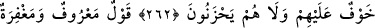
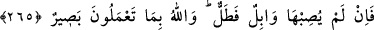

ALLAH YOLUNDA İNFÂK
261. Allah yolunda mallarını harcayanların örneği, yedi başak bitiren bir dane
gibidir ki, her başakta yüz dane vardır. Allah dilediğine kat kat fazlasını verir.
Allah’ın lütfu geniştir, O her şeyi bilir.
262. Mallarını Allah yolunda harcayıp da arkasından başa kakmayan, fakirlerin
gönlünü kırmayan kimseler var ya, onların Allah katında has mükâfatları vardır.
Onlar için korku yoktur, üzüntü de çekmeyeceklerdir.
263. Güzel söz ve bağışlama, arkasından incitme gelen sadakadan daha iyidir.
Allah zengindir, acelesi de yoktur.
264. Ey iman edenler! Allah’a ve ahiret gününe inanmadığı halde malını gösteriş
için harcayan kimse gibi, başa kakmak ve incitmek suretiyle, yaptığınız